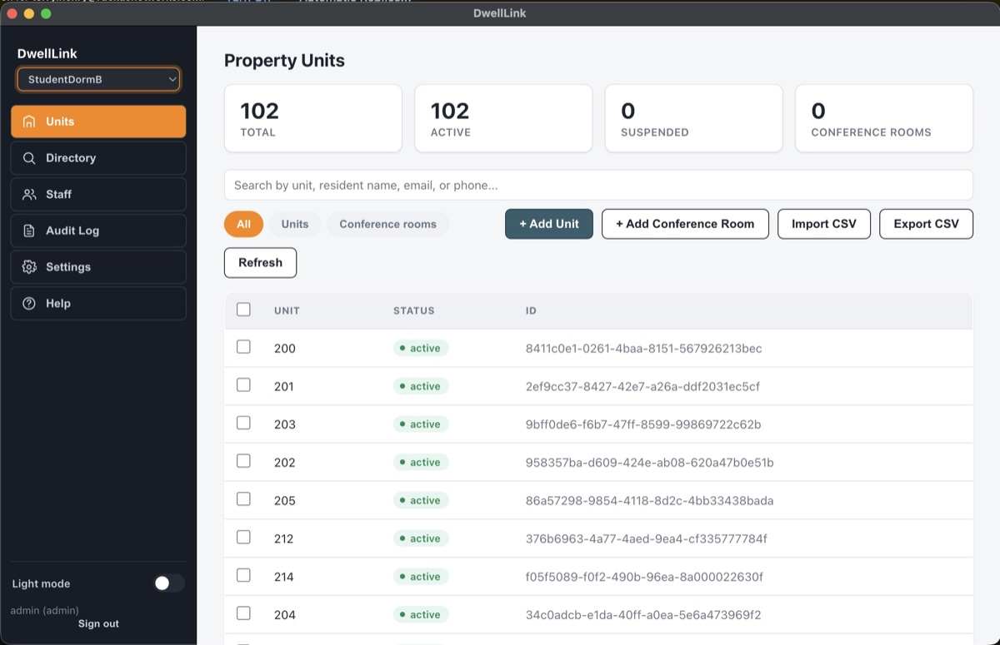

DwellLink
By Terry Henry
Resident Connectivity Management, powered by RUCKUS One. A desktop app for front desk staff and property managers to create and manage property units, residents, and Wi-Fi access in RUCKUS One — without touching the RUCKUS One admin console directly.
Key features
- Add residential units and conference rooms, with optional VLAN, description, passphrase and guest Wi-Fi set up front.
- Bulk import from CSV (with a downloadable template) and export to CSV.
- Sortable unit list with active, suspended, conference-room and vacant counts, plus search and filters.
- Bulk actions: resend access details, suspend, reactivate, move out, delete.
- One-step move-out / turnover: revokes owner and guest Wi-Fi, removes additional residents, and marks the unit Vacant.
- Owner, guest and additional-resident passphrases, each with its own VLAN and optional expiry date.
Featured in The RUCKUS Vibe, November 2026.